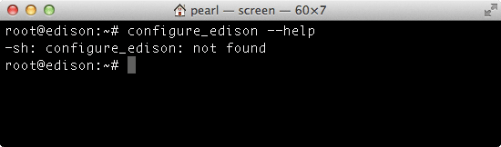
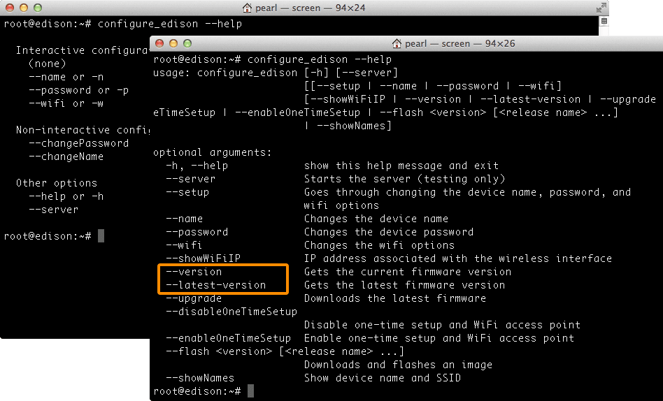
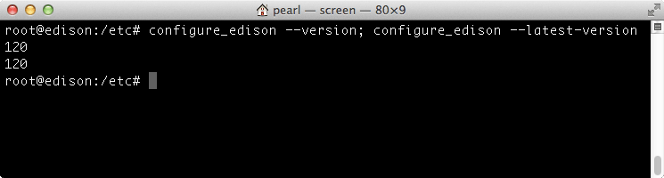

Check installed firmware version
Find out what firmware version is currently flashed on your IoT board by running a few Linux commands directly on the Intel® Edison board.
-
Establish an SSH or serial connection to the Intel® Edison.
Don’t know how? Refer to Shell Access.
-
Run the
configure_edisoncommand with the--helpflag to figure out the right approach for your board based on the output of this command.configure_edison --helpGet a “configure_edison: not found” message?
Your board’s firmware is very out of date. Update the firmware »

Do not see a “–version” flag in the command list?
Your board’s firmware is out of date. Update the firmware »

-
If you see a “–version” flag and your Intel® Edison is online via the onboard Wi-Fi, run the
configure_edisoncommand with the--versionflag, followed by the--latest-versionflag.configure_edison --version; configure_edison --latest-versionIf the outputted numbers are the same, your board is up to date.

In this example, the build version on the board is “120” and the latest is “120”.
Is the first version number (yours) lower than the second (latest) version?
If so, your board’s firmware is out of date. You may want to update the firmware »
In this example, the build version on the board is “16” but the latest is “17”.
-
If the
--latest-versionflag is not available because your board is offline, use thecatcommand to print out the text in the “/etc/version” file on the Intel® Edison.cat /etc/versionSee a build version number less than 120?
If you see something similar to “edison-weekly_build_56_2014-08-20_15-54-05”, the build version number is 56.
If you do not see “weekly-120” or higher outputted, your firmware is out of date. Continue to Update the firmware to enable all the newest features.
Does the “Yocto complete image” file name on the Intel® Edison Software Downloads page indicate the build version?
No, there is no direct naming correlation.
For example, the file name “edison-image-ww05-15.zip” means that this image was released the 5th week of the year 2015. Whereas “weekly-120” is what would be output when configure_edison --version is run with this image.
Return to Flash Edison Firmware Manually »